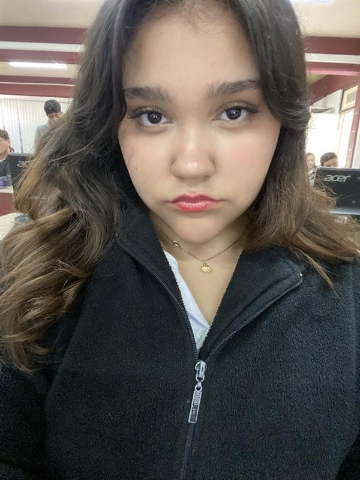

Programadoras

Daira y Hannia estan estudiando en el Cbtis 206 y se estan preparando para ser técnicos en programación, ya que les gusta desarrollar programas y todo lo relacionado con ello. Aquí tienes un ejemplo de uno de sus proyectos.
Daira y Hannia estan estudiando en el Cbtis 206 y se estan preparando para ser técnicos en programación, ya que les gusta desarrollar programas y todo lo relacionado con ello. Aquí tienes un ejemplo de uno de sus proyectos.